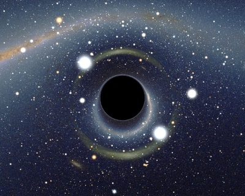
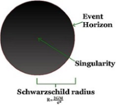
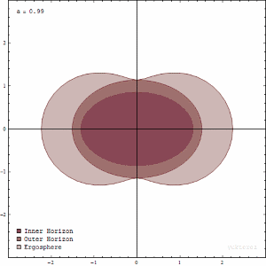

A black hole is a region of spacetime exhibiting such strong gravitational effects that nothing–not even particles and electromagnetic radiation such as light–can escape from inside it. The theory of general relativity predicts that a sufficiently compact mass can deform spacetime to form a black hole. The boundary of the region from which no escape is possible is called the event horizon. Although the event horizon has an enormous effect on the fate and circumstances of an object crossing it, no locally detectable features appear to be observed. In many ways a black hole acts like an ideal black body, as it reflects no light. Moreover, quantum field theory in curved spacetime predicts that event horizons emit Hawking radiation, with the same spectrum as a black body of a temperature inversely proportional to its mass. This temperature is on the order of billionths of a kelvin for black holes of stellar mass, making it essentially impossible to observe.
History
The idea of a body so massive that even light could not escape was briefly proposed by astronomical pioneer and English clergyman John Michell in a letter published in November 1784. Michell's simplistic calculations assumed that such a body might have the same density as the Sun, and concluded that such a body would form when a star's diameter exceeds the Sun's by a factor of 500, and the surface escape velocity exceeds the usual speed of light. Michell correctly noted that such supermassive but non-radiating bodies might be detectable through their gravitational effects on nearby visible bodies. Scholars of the time were initially excited by the proposal that giant but invisible stars might be hiding in plain view, but enthusiasm dampened when the wavelike nature of light became apparent in the early nineteenth century. If light were a wave rather than a "corpuscle", it became unclear what, if any, influence gravity would have on escaping light waves. Modern relativity factually dispels Michell's notion of a light ray shooting directly from the surface of a supermassive star, being slowed down by the star's gravity, stopping, and then free-falling back to the star's surface.
Properties and structure
The no-hair theorem states that, once it achieves a stable condition after formation, a black hole has only three independent physical properties: mass, charge, and angular momentum. Any two black holes that share the same values for these properties, or parameters, are indistinguishable according to classical (i.e. non-quantum) mechanics.
These properties are special because they are visible from outside a black hole. For example, a charged black hole repels other like charges just like any other charged object. Similarly, the total mass inside a sphere containing a black hole can be found by using the gravitational analog of Gauss's law, the ADM mass, far away from the black hole. Likewise, the angular momentum can be measured from far away using frame dragging by the gravitomagnetic field.
When an object falls into a black hole, any information about the shape of the object or distribution of charge on it is evenly distributed along the horizon of the black hole, and is lost to outside observers. The behavior of the horizon in this situation is a dissipative system that is closely analogous to that of a conductive stretchy membrane with friction and electrical resistance—the membrane paradigm. This is different from other field theories such as electromagnetism, which do not have any friction or resistivity at the microscopic level, because they are time-reversible. Because a black hole eventually achieves a stable state with only three parameters, there is no way to avoid losing information about the initial conditions: the gravitational and electric fields of a black hole give very little information about what went in. The information that is lost includes every quantity that cannot be measured far away from the black hole horizon, including approximately conserved quantum numbers such as the total baryon number and lepton number. This behavior is so puzzling that it has been called the black hole information loss paradox.
Event horizon
The defining feature of a black hole is the appearance of an event horizon–a boundary in spacetime through which matter and light can only pass inward towards the mass of the black hole. Nothing, not even light, can escape from inside the event horizon. The event horizon is referred to as such because if an event occurs within the boundary, information from that event cannot reach an outside observer, making it impossible to determine if such an event occurred.
As predicted by general relativity, the presence of a mass deforms spacetime in such a way that the paths taken by particles bend towards the mass. At the event horizon of a black hole, this deformation becomes so strong that there are no paths that lead away from the black hole.
To a distant observer, clocks near a black hole appear to tick more slowly than those further away from the black hole. Due to this effect, known as gravitational time dilation, an object falling into a black hole appears to slow as it approaches the event horizon, taking an infinite time to reach it. At the same time, all processes on this object slow down, from the view point of a fixed outside observer, causing any light emitted by the object to appear redder and dimmer, an effect known as gravitational redshift. Eventually, the falling object fades away until it can no longer be seen. In reality this process happens very rapidly with an object disappearing from view within less than a second.
On the other hand, indestructible observers falling into a black hole do not notice any of these effects as they cross the event horizon. According to their own clocks, which appear to them to tick normally, they cross the event horizon after a finite time without noting any singular behaviour; it is impossible to determine the location of the event horizon from local observations.
The shape of the event horizon of a black hole is always approximately spherical. For non-rotating (static) black holes the geometry of the event horizon is precisely spherical, while for rotating black holes the sphere is oblate.
Ergosphere
Rotating black holes are surrounded by a region of spacetime in which it is impossible to stand still, called the ergosphere. This is the result of a process known as frame-dragging; general relativity predicts that any rotating mass will tend to slightly "drag" along the spacetime immediately surrounding it. Any object near the rotating mass will tend to start moving in the direction of rotation. For a rotating black hole, this effect is so strong near the event horizon that an object would have to move faster than the speed of light in the opposite direction to just stand still.
The ergosphere of a black hole is a volume whose inner boundary is the black hole's oblate spheroid event horizon and a pumpkin-shaped outer boundary, which coincides with the event horizon at the poles but noticeably wider around the equator. The outer boundary is sometimes called the ergosurface.
Objects and radiation can escape normally from the ergosphere. Through the Penrose process, objects can emerge from the ergosphere with more energy than they entered. This energy is taken from the rotational energy of the black hole causing the latter to slow.